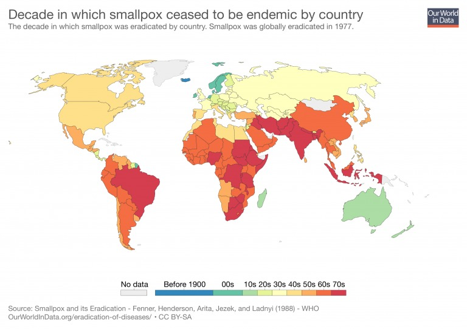

Asal Mula
 Created by Greycia Rahayu
Created by Greycia Rahayu
Pada Abad Pertengahan, cacar menyerang secara berkala di Eropa, menjadi endemis setelah jumlah dan perpindahan penduduk meningkat pada zaman Perang Salib. Pada abad ke 16 cacar melanda sebagian besar Eropa[13]. Di India, China, dan Eropa, cacar terutama menjangkiti anak-anak, dengan epidemi berkala yang menyebabkan kematian 30% dari yang terinfeksi[13]. Pada 1545 epidemi cacar di Goa, India, menelan korban 8.000 anak meningga[13]. Secara epidemiologis timbulnya cacar di Eropa memiliki arti penting, sebab gelombang eksplorasi dan kolonisasi yang terus menerus dilakukan orang-orang Eropa pada abad ke 16 telah menyebarkan penyakit itu ke seluruh dunia[13]. Selama abad ke 18 penyakit ini membunuh sekitar 400.000 penduduk Eropa per tahun (meliputi masa pemerintahan lima kerajaan), dan menyebabkan sepertiga di antaranya buta[1]. Pada akhir abad ke-18, sekitar 400,000 orang meninggal setiap tahun di seluruh dunia karena cacar[13]. Dalam sebuah survei yang dilakukan di Vietnam pada tahun 1898, 95% anak remaja yang bopeng dan sembilan persepuluh dari kebutaan semuanya dianggap berasal dari cacar[1]. Pada awal tahun 1950 -150 tahun setelah pengenalan vaksinasi- sekitar 50 juta kasus cacar terjadi di dunia setiap tahunnya, angka tersebut turun menjadi sekitar 10-15 juta pada tahun 1967 dan 2 juta meninggal tahun itu[1]. Satu studi cacar setelah kasus di Eropa dan Kanada (1950-1971) menunjukkan angka kematian 52% pada orang yang tidak divaksinasi, 1,4% pada mereka yang divaksinasi hingga 10 tahun sebelum paparan, dan hanya 11% pada mereka yang lebih dari 20 tahun vaksinasi sebelum pajanan[1]. Untuk kelompok usia 10-49 tahun, tingkat kematian adalah 49% pada orang yang tidak divaksinasi dan 4,3% pada mereka yang divaksinasi 20 tahun sebelumnya[1]. Berikut ini data kasus penyakit cacar yang tersebar diberbagai benua diseluruh dunia[11].
Read more Comments (3) April 26, 2007
Kawasan Terinfeksi
Created by Muhamad Syahrul I.
Kawasan yang terkena wabah smallpox antara lain:
- Eurasia
- Afrika
- Amerika Tengah
- Amerika Utara
- Amerika Selatan
- Asia Tenggara
- Australia
- Polinesia
- Mikronesia
Read more Comments (3) April 26, 2007
Peta Wilayah Kasus Penyebaran
Created by Baihaki
Penyebaran cacar global dapat ditelusuri ke pertumbuhan dan penyebaran peradaban, eksplorasi, dan perluasan rute perdagangan selama berabad-abad. Sorotan Sejarah: Abad ke-6 -Peningkatan perdagangan dengan China dan Korea memperkenalkan cacar ke Jepang. Abad ke-7 -Ekspansi Arab menyebarkan cacar ke Afrika utara, Spanyol, dan Portugal. Abad ke-11 - Perang Salib selanjutnya menyebarkan cacar di Eropa. Abad 15 - Pendudukan Portugis memperkenalkan cacar ke dalam bagian Afrika barat. Abad ke-16 - Kolonisasi Eropa dan impor perdagangan budak Afrika cacar ke Karibia dan Amerika Tengah dan Selatan. Abad ke-17 - Kolonisasi Eropa mengimpor cacar ke Utara Amerika. Abad ke-18 - Eksplorasi oleh Inggris memperkenalkan cacar Australia.

Read more Comments (3) April 26, 2007